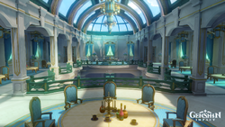
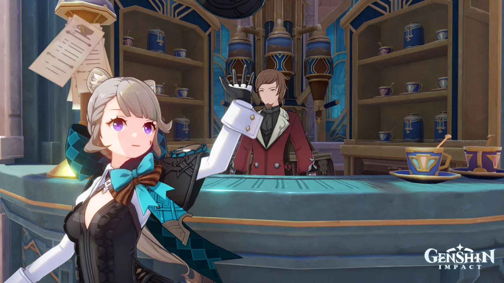

Dining
In Fontaine we house many forms of cuisine, and we have our fair share of more sophisticated experiences through cafes. Take a scroll to some of our most popular places to dine.
Café Lutece

This stands as one of the most popular cafés in the Vasari Passage, allowing you to enjoy delicious coffee and snacks. They experience all forms of customers from all walks of life. The owner, Arouet, encourages all their customers from all backgrounds to freely and comfortably discuss philosophy and other topics as they enjoy their coffee. Anyone may participate, and no topic is forbidden, with the exception of "death."
Hotel Debord
Our famous Debord is a notorious restaurant in Quartier Narbonnais. Its owner, Vaneigem, thoroughly believes that "art is the best seasoning for good food," this sentiment allows many artists to often be invited from various walks of life to perform at the restaurant, adding to the experience. This area will allow you to enchant yourself with various dishes such as Steak-based Steak Tartare, Fontainian Foie Gras, and Duck Confit. The intricate interior design also ensures that guests will be able to view the performances no matter where they sit. For those who love art, such displays may be even lovelier than choice food!
Louis Snack Shop
One of my more friendlier options for cuisine comes from our lovely Louis from his snack shop. But don’t let the more informal opening fool you, his shop sells the finest of authentic Fontainian snacks and small meals such as our Fish and Chips, Fontainian Onion Soup, and Fricassee de Poulet. A local speciality, as this shop does not have as much traffic as Hotel Debord but well versed amongst the locals we frequent it. Allow yourself to dwell on the simple pleasures of our cuisine.